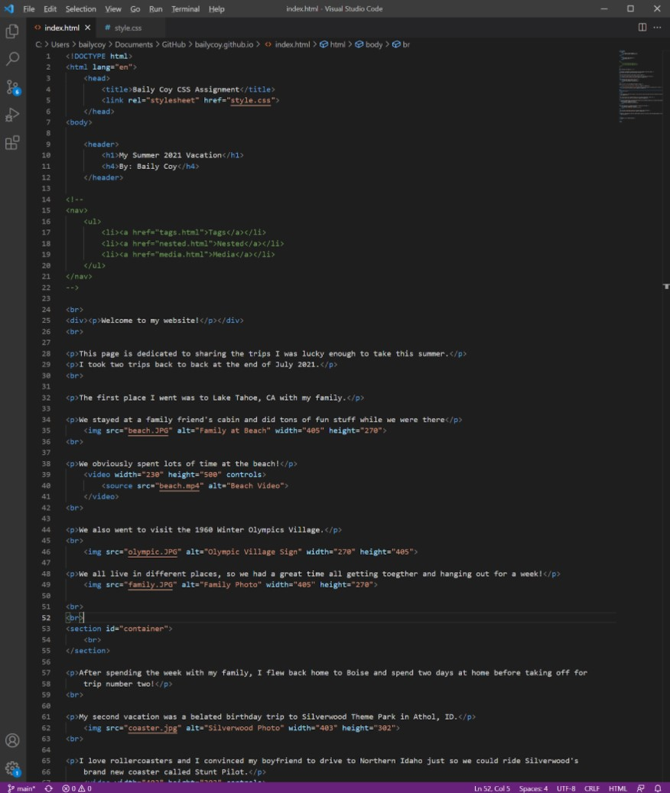

Once we had basic HTML down, it was time to move onto something more advanced.
CSS is the best way to make your website look more visually interesting when coding.
This was much more challanging for me, but my websites look a lot better because of it!
We learned how do to fun stuff like this!
These are screenshots from my CSS assignment when I was done.
